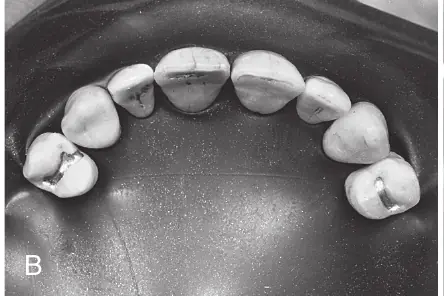

نسخه استخراجشده؛ ترجمه یا تأیید علمی انجام نشده است. وضعیت: captured
خانمی ۵۰ ساله برای پوسیدگی سرویکال فاسیال ثنایای میانی بالا آمده و لبهی لثهای ضایعه کمی زیر لثه است. دانشجو سوراخ این دندان را روی جای معمول الگو زد. وقتی کلمپ 212 ورق را رو به اپیکال کشید، سپتومها نازک شدند و آب از امبرژرها به میدان آمد. کجای کار اشکال داشت؟
کلمپ 212 دوکمانه و بیبال است و فکهای باریکی دارد. کارش کنار زدن ورق و لثهی آزاد از روی ضایعهی کلاس V است، نه نگه داشتن ورق روی قوس. برای همین پس از جا افتادن ورق روی دندان میرود.
برای دیدن لبهی لثهای ضایعه، ورق دور این دندان باید بیشتر از معمول رو به اپیکال کشیده شود. سوراخی که روی جای معمول است سپتوم کافی ندارد؛ ورق از امبرژرها بیرون کشیده میشود و سیل از دست میرود.
اشتباه رایج: پانچ کردن همهی سوراخها از روی الگو، بیتوجه به دندانی که کلمپ 212 میگیرد. جای همان یک سوراخ را پیش از پانچ جدا علامت بزن.
